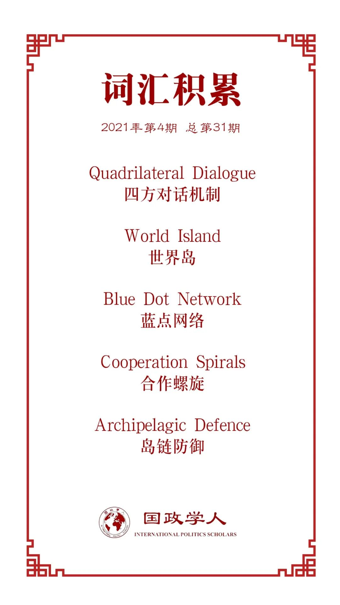

收录于合集

作品简介
【作者】 Ashley J. Tellis，卡内基国际和平研究院高级研究员，于芝加哥大学取得博士学位。曾任美国驻印度大使馆高级顾问。其在小布什政府时期担任美国国家安全委员会特别助理，并担任东南亚战略规划方向的高级主任。研究方向主要为国际安全，特别是美国在亚洲和印度次大陆方面的外交和国防政策。
【编译】 杨沛鑫（国政学人编译员，中国人民大学国际关系学院硕士研究生）
【校对】 钱靓
【审核】 姚寰宇
【排版】 毛雅欣
【美编】 臧泽华
【来源】 Tellis, Ashley J. “Waylaid by Contradictions: Evaluating Trump’s Indo-Pacific Strategy.” The Washington Quarterly 43.4 (2020): 123-154.
【归档】 《国际关系前沿》2021年第4期，总第31期。
期刊简介
美国《华盛顿季刊》（The Washington Quarterly），是一本有关国际安全、外交关系以及政策制定的国际事务季刊杂志，由战略与国际研究中心（CSIS）创办，乔治·华盛顿大学艾略特国际事务学院及泰勒弗朗西斯集团共同承办。2019年期刊影响因子1.288，在95种国际关系期刊中排名第47。
道阻且长：解析特朗普的印太战略
Waylaid by Contradictions: Evaluating Trump’s Indo-Pacific Strategy
Ashley J. Tellis
内容提要
本文从地缘政治、经济以及军事三个方面考察了特朗普政府时期提出的自由开放的印太战略（Free and Open Indo-Pacific Strategy），并总结了印太战略在这三个方面的得失。作者认为，虽然印太战略是在特朗普时期正式形成的针对中国的，但是特朗普本人冒进和鲁莽的作风恰恰是印太战略继续发展的最大阻碍，特朗普对规则和秩序的无视使得印太战略在实行时遇到了多个自相矛盾的地方。通过对现行美国印太战略的目标、手段和不足之处进行分析之后，作者认为未来的美国大战略可以以印太战略为基础不断推进，并提出在地缘政治、经济以及军事领域可以更加完善的部分。
文章导读
01
研究背景
特朗普本人留下的最大政治遗产就是印太战略。 而美国战略界早在特朗普之前就已经对印太这一地缘概念得出了共识，认为其应该成为美国在全球布局中的中心。2010年，希拉里在讲话中就提出印太地区对全球贸易和商业有重要作用。时任美国国防部长哈格尔在2014年的讲话中明确指出，美国在印太区域看到了建立一个新的安全体系的可能性，看到了在本地区实现相互尊重主权，但同时也尊重彼此认同的，能够维护世界和平、稳定和安全的共同价值的可能性。而再往前追溯，这个建立跨越印太区域安全体系的想法早在小布什时期就已经被提出。
从现实来看，中国在印太区域的崛起以及在全球层面对美国所造成的挑战是美国提出并执行印太战略的最主要原因。鉴于中国带来的挑战可能持续存在，未来的美国政府应该保留其印太架构，作为未来地区政策的基础。但华盛顿政策的内容应该改变，因为目前的印太战略经常受到特朗普自身的阻碍。因此，本文将从地缘政治、经济以及军事领域对印太战略做重新的解读，从而使它从一个总统的个人政治遗产上升到未来美国的系统的地缘战略。
02
地缘政治层面：重新评估亚洲的战略结构
如果美国国家安全战略的目标是为了保护美国本土及其盟友，那么其最关键的任务就是消灭一切可能的威胁。从麦金德和斯皮克曼的理论出发，美国认知中的中国是欧亚地区唯一有能力与美国进行全面竞争的对手，同时中国崛起后必然会将美国排挤出这一区域。因此，为了消除威胁，特朗普政府决定与中国脱钩，并迫使制造业回流以使美国在相对收益上获利。但是，这对于美国的盟国以及企业来说是非常困难的，这是强迫他们在安全和繁荣之间选边站队。印太战略应该做的是在印太地区建构一个有效的同盟来遏制中国，即建立一个自由开放的印太区域秩序。
在面对中国带来的挑战时，美国有单边和多边两种政策选择。从多边角度来看，特朗普政府的聚焦点放在了“自由开放的印太”这一最初由日本提出的地缘政治概念上。为了遏制中国在这一地区的行为，美国推行的印太概念有三点核心的政治含义：1、无论国家大小，一律尊重其主权和独立；2、和平处理争端；3、尊重国际法，特别是尊重自由航行和飞越的权利。但需要指出的是，没能将欧洲盟友引入到印太战略中是特朗普政府时期美国的一大失误。成功执行印太战略需要强大的欧洲盟友和亚洲盟友的同时支持。但是，在任何情况下，鼓动美国的盟友对中国进行反制都是一项费时费力的工作——因为这些盟友在经济上都与中国相互依赖，同时在综合实力上都弱于中国。并且中国也在努力赢得这些中间国家的支持。由于以上种种结构要素的限制，特朗普政府时期的印太战略并没有能够将所有盟友团结起来。因此，美国在接下来需要在不同的盟友之间根据不同利益建立不同的联盟：与一小部分核心盟友建立军事安全联盟；与一部分建立供应链上的同盟；并与更多的国家建立基于共同规则的秩序联盟。
当然，特朗普时期的印太战略也取得了一些成绩。美澳关系改善，美台军售、官方互访等活动也在持续进行。同时，其他国家也纷纷效仿美国出台了自己的印太战略：印度、东盟、澳大利亚、韩国甚至欧盟都对印太区域的发展表示了关切，并提出了自身的印太战略以参与到这一区域的政治、经济活动中。因此，面对中国带来的挑战，美国不仅需要积极应对，还需要发动盟友进行制衡。对于其他印太盟友国家来说，印度就是一个很好的榜样。
因此，如果要对特朗普时期的美国印太战略做一个总结，就会发现美国推行印太战略最大的问题其实是出在特朗普身上。特朗普对于国家安全战略的漠不关心以及退群行为不仅没有成功制衡中国，还对美国的联盟体系产生了破坏。美国的亚洲盟友在综合国力面远远弱于中国，因此美国需要扮演领导者的作用。而特朗普狭隘的民族主义将美国领导的自由国际秩序视为一种负担；同时，美国要求盟友承担更多防务费用的做法极大地损害了美国建构的盟友体系，这也使得这些国家在考虑是否加入印太体系时顾虑地更多。总的来说，虽然美国的联盟体系仍然在保持运转，但是特朗普对于盟友和国际事务的消极态度极大的损伤了印太战略在地缘政治层面的成效。
03
**** 经济层面：保护物质利益的命脉
在经济层面来说，印太战略最主要的目的就是保护美国及其盟友的物质利益。因此特朗普政府在四个方面采取了措施：促进美国经济增长、阻止中国在世界贸易体系中继续获利、重构印太区域的贸易网络以及反对一带一路。
（一）促进美国经济增长
特朗普上任之后，立刻在奥巴马的基础上进行了税改，这使得美国经济在新冠疫情爆发之前得到了充分发展。但长期来看，特朗普的减税政策带来的福利是不确定的，回调奥巴马的医改计划可能会对美国的长期发展造成影响。从另一个角度来说，或许特朗普的反移民政策会比其财政政策更影响美国的竞争力，这会直接妨碍美国的创新。
（二）阻止中国在世界贸易体系中继续获利
当然，在改变国内政策的同时，特朗普还对中国带来的经济挑战做出了直接的回应。他认为美国在战后创造的不均衡的国际贸易体系对美国经济造成了直接的损伤。因此，特朗普对中国的高科技企业做出了限制，对在美中国投资进行了管控，对所谓的“技术剽窃”发起了制裁。
虽然这些手段在一定程度上可以帮助美国扭转贸易逆差，但是特朗普发起的关税战却将这些手段带来的收益全部掩盖。特朗普不顾宏观经济发展的现状将关税鲁莽调高，导致了国内商品价格陡增，失业大幅增加，同时使美国在面对中国特色社会主义市场经济体制时处于绝对的下风。与此同时，美国发起的贸易战不仅加剧了中美摩擦，在事实上也与印太区域的盟友开展了关税和贸易的交锋。相反，美国的正确做法应该是联合印太区域的盟友建立经济同盟来遏制中国的经济发展。
（三）重构印太区域贸易网络
特朗普还对国际贸易秩序进行了调整，但是这是建立在其对国际贸易秩序本身存在的偏见之上的。虽然在美国的逼迫之下，许多国家调整了对中国的产业供应，但是让它们与中国完全脱钩是不可能的，结果就是，中国在贸易战后仍然是世界制造业的中心。因此，虽然部分国家可能认为中国是贸易体系的受益者，但是这些国家需要更有针对性的与美国合作来与中国讨价还价，而不是面对一个孤立的单边主义的美国。然而，奥巴马时期对建立一个美国领导的自由贸易秩序的尝试——TPP，被特朗普全盘推翻。同时，美国还对美加墨协定、美日、美韩等贸易关系进行了调整，但是这些试图重振美国经济的努力只能说是徒劳无功。
而美国印太战略应该考虑的不是立刻使美国贸易收益扩大，而是如何应对中国崛起带来的影响。在这种情况下，美国可以考虑对中国周边的盟友进行投资、有选择的与中国进行产业脱钩或对中国在关键领域的科技发展进行打压，长远来看，这些政策选项利大于弊。
（四）反对“一带一路”倡议
美国印太战略的一大目的就是阻止一带一路在亚洲继续发挥效力。有关一带一路的具体情况就不再赘述，但是如果其成功建立的话，就会使得中国成为连通亚洲、非洲和欧洲的枢纽，也就真正成为了麦金德理论中的“世界岛”。因此，特朗普政府时期美国通过炮制一带一路可能带来的债务陷阱、丧失自主权等危机，离间中国和周边国家的关系，也开启了新一轮的中美对立。
当然，为了应对一带一路，美国也建立了诸如蓝点网络（Blue Dot Network）；数字连接与网络安全伙伴协议(Digital Connectivity and Cybersecurity Partnership)等制度框架，以连接印太区域的盟友。值得注意的是，以上这些框架都只是对美国私人直接投资的补充，而非替换。2018年，美国对印太地区的外国直接投资达到了1.6万亿美元，高于中日韩三国的总和。所以，如果特朗普政府能够在与中国进行选择性竞争的过程中强调自己作为国际贸易体系的负责任的守卫者，那么这将会有利于美国在印太地屈盟友体系的建立。遗憾的是，特朗普对现行贸易体系的攻击使得美国的盟友体系逐渐分化。换言之，特朗普发起的贸易战不仅针对了中国，还波及到了全球的盟友中。
04
军事层面：对新的威胁严阵以待
如上文所述，美国在印太地区的经济支援以及对区域贸易秩序的维护是实现印太战略的基础。而在本地区维持美国军事能力的有效性是至关重要的。强大的美军能够通过提供安全公共物品的方式来促进本地区生产和贸易网络的延展，并使该地区的盟友同时获取安全和繁荣。因此，美国印太战略在军事层面的目的就是为盟友提供可靠的防御能力。
要实现美国在印太地区的军事优势需要面对两个不利因素：首先是时间和空间上的阻隔不利于美国将军力调往印太；其次是中国在本区域实行的反介入/区域拒止（Anti- Access/Area Denial, A2/AD）战术，这个战术对美军在印太区域的活动造成了巨大影响。因此，美国政策界一直认为要避免中美在印太区域发生直接冲突，但同时也在研究如何最有效率的消灭中国的军事威胁。就前者而言，一些学者提出了“合作的螺旋”（Cooperation Spirals），即通过承认中国对台湾的主权来换取在中国对美国印太军事联盟的接受；就后者而言，一种名为“离岸控制”的方法正在兴起。但可惜的是，特朗普政府在军事领域的“印太战略”无视所有可能削弱美国作战优势的建议，转而选择加倍打击中国，并将美国从其亚洲盟友中孤立出来。
对于美军来说，获得对战场的主导权是其一直以来的愿望，而在印太战略报告中，美军各军种都为在印太区域实现这一目标而做出调整。美国海军和空军正在研究空海一体战和在海上小平台起飞作战的能力。美军新成立的太空部队也在尽全力发展技术水平。从整体来看，虽然中国实力不断提升，但是这仍然没有办法抵消美国在科技以及军事力量的优势。同时，美军在世界各地的作战经验也是中国在短时间内难以追上的巨大优势。与此同时，美军还应该加强在亚洲的军事保障。以下几点非常重要：首先，应当向印太战区倾注大量资源以应对中国威胁，甚至需要将其他战区的资源向印太进行调配；其次，美军应该加强对反潜攻击机，无人载具以及新B-21轰炸机的开发，以保证在印太区域的军事存活能力。此外，还应该加强对信息和情报的传输能力；第三，美军应该协同印太区域盟友进行岛链防御，在中国发展A2/AD能力的背景下，这些岛链应该成为遏制中国的助力；第四，美国国防部以及印太司令部需要考虑如何将印度洋和太平洋联动起来。如果中国能够自由进出印度洋，将会影响到美国在中东、地中海的利益，因此需要与印度发展密切的合作关系。
同时，美国还应该与印太区域的盟友加强军事合作。以印度为例，美军需要在印太区域完成三个方面的补充目标：提升区域盟友的军事能力，使其可以协助美国遏制中国；加强美国与核心区域国家的合作；推动区域国家内部的军事合作，使他们在美国不在场的情况下自主制衡中国。首先，虽然在面对中国时，美国还是必须将自身的军事能力部署到印太区域。但无论如何，都需要鼓励并协助印太盟友大力发展自身的军事能力。其次，对于下一届政府来说，有两件事也显得非常重要：提升美国盟友在面对中国时的进攻能力以及缩小美国与印太盟友之间的能力差距。一般而言，美国政府是不愿意提升其盟友的进攻能力的，但是如果要完成岛链防御计划，美国就必须这么做。最后，美国应该积极鼓励印太区域的盟友进行内部合作。这种合作不是包含美国的Quad（Quadrilateral Dialogue）式的合作，而是鼓励这些国家在没有美国的情况下自发进行防务联盟的建立。总之，在特朗普政府时期，军事层面的印太战略开了一个好头，而进一步的发展需要单边和多边的政治经济合作，这也是需要进一步推动和完善的。
05
**** 结论
过去四年，特朗普本人是美国政府执行印太战略的最大阻碍。总统本人对规则和秩序的无视造成了很多自相矛盾的地方。但是造就这一战略的最大威胁——中国仍然雄踞于东方，因此下一任政府要在特朗普的基础上不断改进，使得印太战略得以延续。
在地缘政治上，最主要的改变应该是重塑美国对世界秩序的主导权，提供对盟友的保护并强化国际秩序。同时，需要将欧洲盟友也引入到印太区域中，实现对中国的全方位遏制。
在经济领域，最主要的改变应该是重新支持全球贸易体系。这不意味着放松对中国的经济制裁，而是意味着需要重新构筑美国为中心的贸易体系，重塑WTO的规则，并重建TPP。
在军事领域，需要加快建设已经上马的项目，包括专注于联合和通过综合能力产生致命效果，而不是过度投资于精致、昂贵和相对脆弱的平台，有望在确保战场控制和有效地投射力量对抗对手方面将带来更大的回报。
如果在未来，这些方面都能得到改善，那么印太战略将真正超越特朗普的政治遗产并摆脱特朗普带来的负面影响，成为美国在大战略方面的真正核心。
译者评述
“印太战略”是特朗普政府上台后正式成型的地缘战略，虽然印太这一概念并非其独创，但是在特朗普任内这一概念得到了系统性的拓展。2019年美国国防部发布的《印太战略报告》明确了一系列的地缘政治、经济以及军事安排，其矛头直指中国，意在构建一个以美国为中心的印太区域秩序。正如文章所言，这种构建区域秩序的尝试可以一直向前追溯到小布什时期，而奥巴马时期的“重返亚太”和“亚太再平衡”在客观上也推动了美国新区域秩序的构建。然而客观来说，特朗普时期出于国内反全球化和民粹主义需求而进行的单边主义外交在很大程度上挫伤了长久以来美国所构建的关系网络。特别是在疫情的背景下，美国国内自顾不暇，在抗疫等问题上不仅不进行反思，还将目前造成的损失归结于是中国对现行国际秩序和多边制度网络的“利用”。此外，虽然特朗普明确制定了系统的“印太战略”，但是这一战略在操作方面更多表现为美国军事联盟在印太战略的普通扩展。特朗普本人对于国际经济和贸易秩序的负面看法使得印太战略从提出到现在并没有向其他领域拓展，因此印太战略也没有能够与已经流产的TPP计划等结合，这一时期的中美竞争在经济上更多以直接的单边经贸摩擦为表现，而在政治上则更多与南海、台湾等地缘议题相挂钩。
值得注意的是，“印太战略”并没有仅仅成为特朗普政府的政治遗产。拜登在赢得大选之后，立刻任命科特·坎贝尔（Kurt Campbell）为新设立的白宫“亚洲事务主管”。坎贝尔其人被外界称为“亚洲沙皇”，可见其在亚洲事务处理方面的熟稔和老道。在译者看来，拜登时期的“印太战略”会进行重新包装，其内部不仅仅有美国在亚太地区原有的地缘政治战略和军事战略，同时还会在气候变化、人权、知识产权以及高科技产业等领域将原有的离散同盟聚合起来，最终通过大量的实践将印太战略制度化。制度化后的“印太战略”不再是美国一个国家的地缘战略，拜登任下的“印太战略”极有可能会融入CPTPP等内核，从而成为一个类似于北约的全方面的组织。因此对于中国来说，在未来一段时间之内的外部环境会较为粘稠：美国将会在各个议题上对于中国进行较大程度的压迫，这种压迫又不同于特朗普时期的直接制衡，而是会在中美对一些议题达成“底线上的一致”的基础上对中国进行压迫，通过构建各个领域相交织的网络，将欧洲、日本等传统盟友以及印度、新加坡等非盟友国家引入印太区域，从而对中国进行全方位的制衡。当然，有一部份学者已经研究了Quad成为亚洲新北约的可能性，并指出Quad并不太可能成为一个类似于北约的存在，但是印太战略本身涵盖了印度洋和太平洋，并且有一个共同针对的国家作为“制度”本身发展和演化的动力。因此在译者看来，无论印太战略本身是否会成为“新北约”，美国在该地区建立一个新的，以美国为中心的区域制度是很有可能的。此外，很多欧洲的传统盟友也将目光投入到了印太这一个地缘范围中，这其中的动机和原因值得深思。这是否意味着美国将所谓的“全政府对华”战略向国际层面衍射，并通过引入一切域外力量来干扰中国在印太地区政治经济影响力的拓展？而作为印太地区一大主体的东南亚国家是否能够接受域外国家对本区域的不断干涉？他们如何应对域内不断演进的大国博弈？这也是一个值得研究的问题。
词汇整理

1. Quadrilateral Dialogue 四方对话机制
美日印澳四国定期举行的对话机制，最早始于2004年12月。彼时，印度洋地震和海啸引发的人道主义灾难促使印度、日本、澳大利亚和美国加快合作，以协调一致的方式采取救援行动。2006年，安倍晋三在其当选日本首相几个月前，首次以“民主国家的集合”之名提出了美、日、印、澳四方合作概念。
2. World Island 世界岛
由哈尔福德·麦金德提出。在这一理论中，他把欧亚非三大洲合起来看做茫茫世界海洋中的一个岛，称之为“世界岛”，把欧亚大陆的中部看作是世界岛的心脏地带。掌握中枢地区的国家会不断强盛，并具备扩张到欧亚大陆边缘地带的能力。
3. Blue Dot Network 蓝点网络
美国对标“一带一路”提出的基础设施建设项目，将根据“普遍接受的原则和标准对提名的基础设施项目进行评估和认证，以促进印太地区和世界各地市场驱动的、透明的、财政可持续的基础设施发展。
4. Cooperation Spirals 合作螺旋
例句：The former debate has generated a range of ideas from accepting compromises to stimulate “cooperation spirals”57 with China to sacrificing Taiwan in exchange for a peaceful resolution of other maritime disputes and an acceptance by Beijing of the US security system in East Asia
5. Archipelagic Defence 岛链防御
例句：If the archipelagic defense concept is to be implemented, the allies will have to operate long-range strike systems and their supporting infrastructure anyway.
文章观点不代表本平台观点，本平台评译分享的文章均出于专业学习之用, 不以任何盈利为目的，内容主要呈现对原文的介绍，原文内容请通过各高校购买的数据库自行下载。
好好学习，天天“在看”
国政学人
支持学术公益与知识传播
微信扫一扫赞赏作者 __赞赏
已喜欢，对作者说句悄悄话
取消 __
发送给作者
发送
最多40字，当前共字
上一页 1/3 下一页
长按二维码向我转账
支持学术公益与知识传播
受苹果公司新规定影响，微信 iOS 版的赞赏功能被关闭，可通过二维码转账支持公众号。